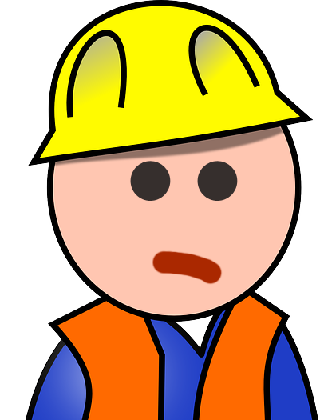

HYDRO EN PANNE
LE jeu

Bonjour, je suis Gérard, contremaître chez Hydro. Grosse journée en perspective! On annonce des rafales de vent pouvant aller jusqu'à 10 km/h... ouf...
Mais inquiète-toi pas! Dans notre plan 2035 de réduction de pannes, nous avons établi un nouveau protocole pour contrer les vents. C'est simple, on utilise nos gros camions bleus afin de protéger nos poteaux électriques des rafales. STP, aide nous en cette journée chargée. Les arbres qui poussent plus vite qu'avant n'ont qu'à bien se tenir!
JOUER